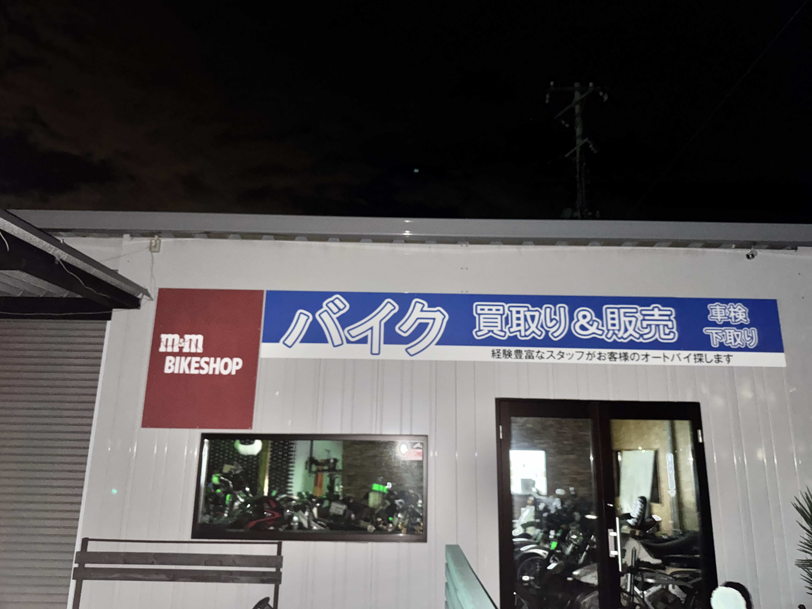
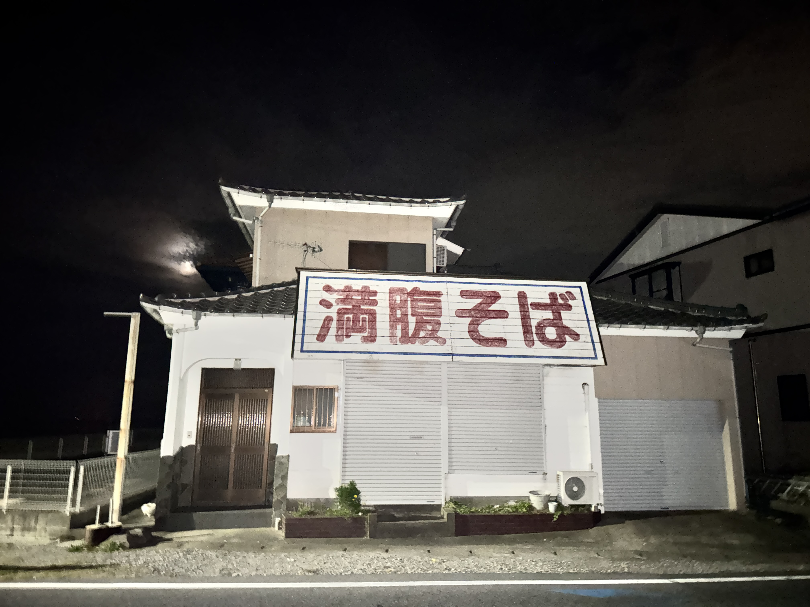

フィールドワーク
2026/10/19撮影
地元の釣具屋です。
釣り具の販売だけでなく、荷物の管理を押してくれて旅行客、登山客から、支持を集めています。
実際に、釣り具を購入するために訪れる人も多く、私が生まれる前の世代から、交流があります。
駅を背にして、前にあるのが釣具屋です。なので、デザインより、認知されることを意識しているように感じました。

2026/10/19撮影
同じく、地元のバイク屋です。
バイクの販売だけでなく、修理や、バイクの車検も行っています。
私の地元は観光地なので、観光客がバイクで訪れることも多く、何かあった時に安心感を与えられる場所になっています。
国道沿いにあるので、ツーリングコースから見えることが素晴らしいと思いました。

2026/10/19撮影
最後に近所のラーメン屋です。
このラーメン屋は昔からあり、ラーメンではなく「中華そば」という言葉が定着していたため
「そば」という看板から、昔を感じさせるようなデザインになっています。
改めて地元を観察しました。
釣具屋、バイク屋、ラーメン屋の3つを観察しましたが、どの店もそれぞれの特徴を活かしたデザインになっていると感じました。
田舎ならではの、地域に根付いたデザインが多く、観光客や地元の人々に愛されていることが伝わってきました。